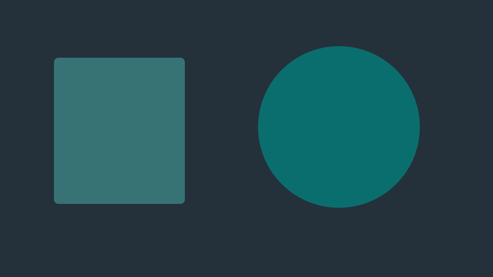

<link rel="stylesheet" href="./specimen/examples.css" />
<section class="cap-specimen" aria-labelledby="s-embed">
  <h2 id="s-embed">An embed before the click: the site's poster, a play button and what it is</h2>
  <p class="cap-muted">No request goes to the service until the reader asks. Without script the link opens the service; with script (Prelum's <code>render/enhance</code> in a post, the React wrapper on a page) the player takes its place.</p>
  <div class="player-sample-column">
    <figure class="cap-player" data-kind="embed" data-service="youtube" id="embed-poster"><a class="cap-player-facade" href="https://www.youtube.com/watch?v=dQw4w9WgXcQ" data-embed-src="https://www.youtube-nocookie.com/embed/dQw4w9WgXcQ?autoplay=1" data-embed-title="A keynote on publishing with Prelum"><span class="cap-player-play" aria-hidden="true"></span><span class="cap-player-label">Watch on YouTube: A keynote on publishing with Prelum</span></a><figcaption>The talk, 38 minutes.</figcaption></figure>
  </div>
</section>

<section class="cap-specimen" aria-labelledby="s-embed-plain">
  <h2 id="s-embed-plain">An embed with no poster, and a song</h2>
  <div class="player-sample-column">
    <figure class="cap-player" data-kind="embed" data-service="vimeo" id="embed-plain"><a class="cap-player-facade" href="https://vimeo.com/123456789" data-embed-src="https://player.vimeo.com/video/123456789?dnt=1&amp;autoplay=1" data-embed-title="Setting up a new site in ten minutes"><span class="cap-player-play" aria-hidden="true"></span><span class="cap-player-label">Watch on Vimeo: Setting up a new site in ten minutes</span></a></figure>
    <figure class="cap-player" data-kind="embed" data-service="spotify" id="embed-audio"><a class="cap-player-facade" href="https://open.spotify.com/episode/0123456789abcdefghijkl" data-embed-src="https://open.spotify.com/embed/episode/0123456789abcdefghijkl" data-embed-title="Episode 12: shared site code"><span class="cap-player-play" aria-hidden="true"></span><span class="cap-player-label">Listen on Spotify: Episode 12: shared site code</span></a></figure>
  </div>
</section>

<section class="cap-specimen" aria-labelledby="s-react">
  <h2 id="s-react">The React wrapper: a click puts the player in place</h2>
  <div class="player-sample-column" data-mount="embed"></div>
</section>

<section class="cap-specimen" aria-labelledby="s-video">
  <h2 id="s-video">Video and audio</h2>
  <p class="cap-muted">The native players at the column's width. The video holds its shape from its width and height, shows the site's poster, and downloads nothing before play; the audio's transcript is one link away.</p>
  <div class="player-sample-column">
    <figure class="cap-player" data-kind="video" id="video"><video src="/media/sample-demo.mp4" poster="./specimen/poster.svg" width="1280" height="720" controls preload="none" playsinline aria-label="A short demo"><track kind="captions" src="/media/sample-demo.vtt" srclang="en" label="English" default></video><p class="cap-player-transcript"><a href="/writing/demo-transcript">Transcript: A short demo</a></p><figcaption>What the demo shows.</figcaption></figure>
    <figure class="cap-player" data-kind="audio" id="audio"><audio src="/media/sample-talk.mp3" controls preload="none" aria-label="A talk on shared site code"></audio><p class="cap-player-transcript"><a href="/writing/talk-transcript">Transcript: A talk on shared site code</a></p></figure>
  </div>
</section>
